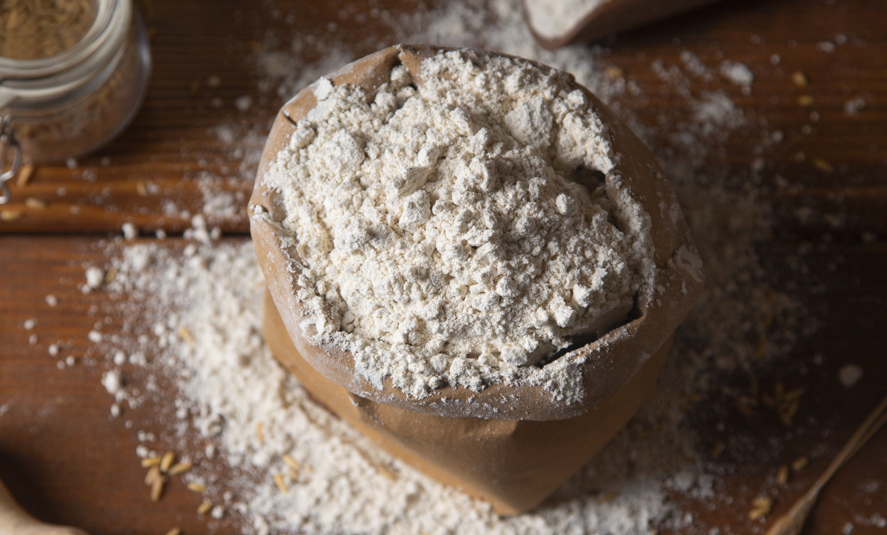

¿Qué es la harina? Es un polvo fino obtenido principalmente de la molienda de cereales como el trigo, aunque también se pueden utilizar otros granos como el maíz, centeno, avena, arroz o incluso legumbres y frutos secos.
Se trata de un ingrediente esencial en la alimentación humana, ya que constituye una de las principales fuentes de energía debido a su alto contenido en carbohidratos. Además, aporta proteínas, fibras y vitaminas y minerales, esenciales para el organismo.

La harina no solo se usa en la preparación de productos básicos como panes y pasteles, sino que ha evolucionado a lo largo del tiempo para adaptarse a diversas necesidades alimenticias. Por eso, existen harinas integrales, que conservan los nutrientes del grano entero, y harinas más refinadas, que son principalmente almidón. Este proceso de molienda y refinado influye en sus características y propiedades, lo que hace que las harinas se adapten a distintos usos culinarios y dietéticos.

Además, hoy en día, las harinas tienen aplicaciones mucho más amplias. No solo se utilizan en la cocina tradicional, sino también en la industria alimentaria, adaptándose a tendencias como la alimentación sin gluten, la elaboración de productos más saludables y en la creación de harinas especializadas para necesidades dietéticas específicas.